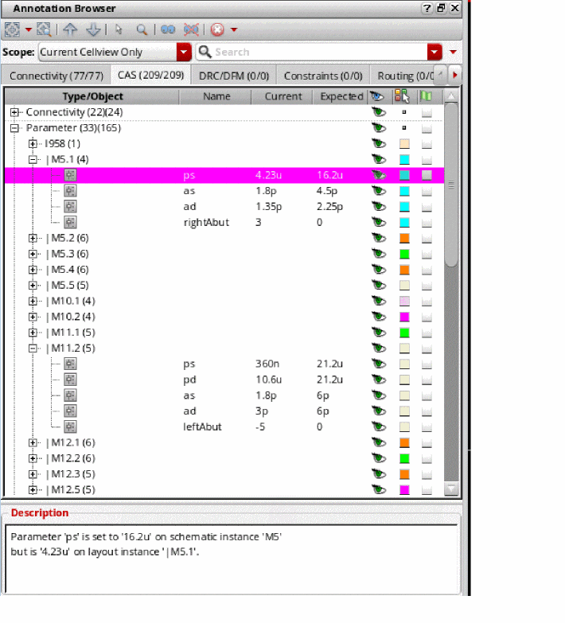
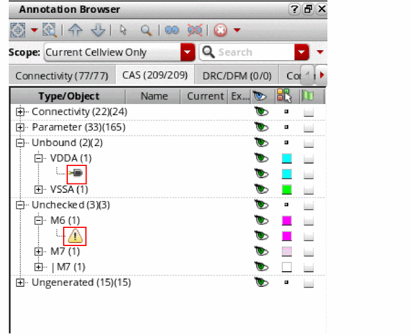
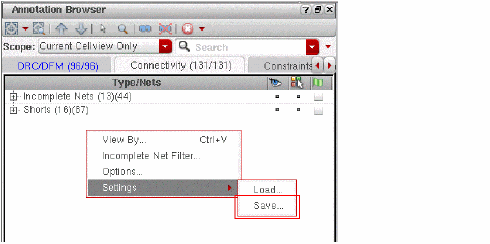

Annotation Browser Tabs
The Annotation Browser contains the following tabs, each of which, displays a unique set of violation markers. The Connectivity tab, for example, displays markers that indicate connectivity violations in the design.
|
The Connectivity tab carries the connectivity extractor markers that indicate connectivity violations in the design. The markers supported by this tab are:
The Open markers created by the connectivity extractor between unassigned must-join instance terminals are displayed using a name that reflects the internal net name and the instance name concatenated with "|". You can choose to display the listed violations in the tab based on signal type or the net for which these violations are reported. |
|
|
The DRC/DFM tab carries violation markers generated during the |
|
|
The CAS tab is automatically displayed to report the markers generated by the Connectivity – Check – Against Source (CAS) command. The markers in the CAS tab report the differences between the schematic and the layout in terms of instances, masters, connectivity, parameters, and instance or net names, depending on the checks that are selected on the Check Against Source Form. The figure below displays the Annotation Browser CAS tab reporting various types of markers. Where applicable, the CAS tab also displays the Current and Expected values against each marker. The Description field at the bottom of the CAS tab, similar to the other tabs, provides more information about the selected marker and hints at how the marker can be resolved.

|
|
|
The marker of each type is identified using a unique icon, as displayed in the figure below.

Having the CAS markers display in the Annotation Browser assistant makes the CAS makers available in the format that is already being used to view the other marker types in the design, such as those generated by the connectivity extractor. This also makes it simple to visualize, select, sort, filter, and group the schematic and layout differences. |
|
|
Carries the markers generated by various Virtuoso tools that verify the design for Placement, Specialty Routing, and Design and Process Rules. The supported tools conducting these checks are: For a marker to be supported by the Constraints tab, it must be associated with a tool listed above. Else, the marker is automatically placed in the Misc tab, unless it corresponds to an application supported by the Connectivity or DRC/DFM tabs. |
|
|
The Misc tab of the Annotation Browser displays all those markers that are not associated with any of the applications supported by other tabs. The Misc tab also lists violation markers for any process rule violations in the design and any room violations generated during placement. |
|
|
The IDF tab carries violation markers generated using the DRC/DFM fixing flow. |
|
|
The Routing tab carries violation markers generated during design verification.
For more information, see |
The markers supported by each tab are displayed in the Annotation Browser Pane. Each tab name in the Annotation Browser includes a value within parentheses. This value indicates the number of markers currently shown in the browser pane as opposed to the total number of markers in the tab.
For example, Connectivity (23/120) means that the design contains 120 markers generated by the connectivity extractor, of which only 23 are being displayed in the browser pane.
Depending on your preferences, you can change the position of the tabs in the Annotation Browser. Although, by default, the tabs are displayed horizontally at the top of the Annotation Browser assistant, you can also choose to display the tabs vertically on the side. To control the position of the tabs, use the tabPosition environment variable.
In addition to choosing the position of the tabs, you can choose the order in which the tabs are displayed by manually dragging and dropping them to form the desired order. After you have decided upon the tab display order, you can save your settings so that the tabs display in the same order the next time you open the browser.
For example, the figure below shows the Connectivity tab being dragged to the right so that it is the second tab to be displayed the next time the Annotation Browser assistant is opened.
Notice in the figure below that the Connectivity tab is now the second tab to be displayed. DRC/DFM is the first.
Saving the Annotation Browser Settings
To make sure the order that you choose for the Annotation Browser tabs is retained even after you close the current Layout XL session, you must save your tab order preferences to a *.ini file. To do this:
-
In the browser pane, right-click and select Settings – Save from the shortcut menu, as shown in the figure below.

Your current tab order settings will get saved to a .ini file. You can then load the .ini file using the Settings – Load command to restore the saved settings the next time you launch Annotation Browser.
Alternatively, you can save your settings to the ab.ini file, which gets loaded automatically when you launch the Annotation Browser. The ab.ini file is, by default, saved under the .cadence/dfII/ab directory, unless referenced at some other location as defined in the setup.loc file.
Showing Newly Created Incomplete Nets Automatically
Showing and Hiding Current Incomplete Nets
Checking Shorts, Incomplete Nets, and Illegal Overlaps
Return to top